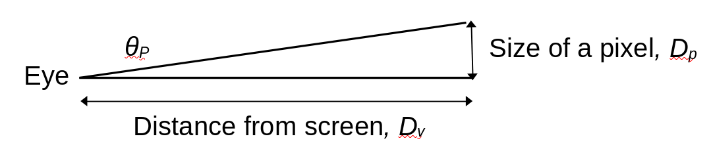

Snake oil: 4K displays on smartphones
 The Sony Xperia 1 IV has a 6.5-inch "4K" display with a quoted resolution
of 643 pixels per inch (PPI). I don't know if this is the highest screen
resolution currently available on a portable device, but it must be close.
Many current smartphones have QHD screens
-- resolutions of 500 PPI or more -- and the resolution race shows
no signs of slowing down.
The Sony Xperia 1 IV has a 6.5-inch "4K" display with a quoted resolution
of 643 pixels per inch (PPI). I don't know if this is the highest screen
resolution currently available on a portable device, but it must be close.
Many current smartphones have QHD screens
-- resolutions of 500 PPI or more -- and the resolution race shows
no signs of slowing down.
Increasing the screen resolution of a portable device has significant disadvantages. Not only are higher-resolution screens more expensive, they use more battery power themselves, and require more CPU resource to manage, which in turn uses more battery power. Given these disadvantages, the increasing resolution would have to be associated with a significant optical improvement.
But is it? Or is this just another marketing gimmick? Is there really a need for 4K screens on smartphones?
It turns out that we can kind-of answer that question. The answer is 'Um... depends; probably not'. To begin answering it, however, we have to understand the notion of visual acuity. We will also have to face up to some basic algebra and trigonometry.
Visual acuity
To justify a higher screen resolution, it must be the case that the existing, lower resolutions allow the user to see individual screen pixels. Once we get past the point where pixels are indistinguishable from one another, further increases in resolution are wasted. Common sense suggests that the is such a point; we can't keep increasing resolution forever, and still see gains in display quality. But where is that point?
Visual acuity is the measure of the eye's ability to distinguish two points of light that are close together. That is, it's a measure of the eye's resolving power. For a person with perfectly healthy eyes, actuity is fundamentally limited by the number of light-sensitive cells in the retina: for two visible objects to be distinguished, they must, as a minimum, stimulate different retinal cells. Acuity is fundamentally an angular measure -- what matters is the angle between the two objects that is made at the lens of the eye, which depends on how far away they are. This is just common sense -- objects that are further away are harder to tell apart, because the angle they make at the eye is smaller.
For a display screen, this situation is shown in the diagram below. A single pixel of size Dp is on a screen some distance Dv from the viewer. The angle this pixel makes at the lens of the eye is θp. This is the same angle that would be made between two pixels whose separation is Dp.

In the interests of full disclosure, I should point out that the diagram above, and the analysis that follows, assumes that the eye is looking directly at the screen region of interest. Pixels that are off this optical axis are a little further from the eye, just by the principles of geometry. However, it's reasonable to assume that the pixels of interst are the ones the eyes are actually looking directly at.
From basic trigonometry, so long as Dv is much larger than Dp (and it always will be, unless you're looking at the screen with a magnifying glass),
θp = Dp / Dv,
so long as the angle θp is expressed in radians. We learned this in high school -- surely you remember?
If we know how large a screen pixel is, and how far the screen is from the eye, we can work out θp. But how large must this angle be, for the pixel to be seen as a separate object from other, nearby pixels?
For opticians, "normal" vision (sometimes expressed as "20/20") corresponds to the ability to distinguish objects that are separated by an angle θp of one minute of arc. One minute is one sixtieth of a degree. This figure, however, comes from the practice of testing whether a person needs vision-correcting lenses. With perfect correction (e.g., well-fitted spectacles), it turns out that limit of human visual acuity is about 0.6 minutes. Of course, there are some people with better acuity than this, but that's a typical figure. 0.6 minutes corresponds to 0.6/60 degrees, or 0.000175 radians. It's unlikely that many people have visual acuity radically better than this, because we all have similar retinas.
So, returning to our diagram, two nearby pixels will be distinguishable in all cases where
Dp / Dv > 0.000175.
Apply acuity limits to screen design
Of course, we don't normally measure screen resolution in terms of angles -- this measure would change with viewing distance. Usually we measure resolution in terms of pixels per inch (PPI). Usually this figure is quoted in the most generous way, by measuring across the screen diagonal. The diagonal size of a pixel is about 40% larger than the height or width so, at the limit, we might be able to distinguish pixels that are diagonally separated even if we can't distinguish them when the are side-by-side.
If we express the diagonal pixel size Dp in inches, then the display DPI is just
PPI = 1 / Dp,
and, with a little basic algebra, we can rewrite our previous, limiting expression as
PPI > 5730 / Dp.
What this expression says is that for two pixels to be distinguished, the display PPI must exceed 5730 divided by the viewing distance in inches. This is a fundamental principle of optics and the physiology of the human eye, and applies to all types of screen. Nothing about this is subjective to any significant degree. All we need to know, to work out what screen PPI is optimal, is how far from the eye the screen is.
What does this mean in practice?
Let's consider the PPI figures for some specific screen resolutions and sizes. We are, as I mentioned earlier, interested in the diagonal PPI here, which we can work out from the vertical and horizontal resolutions using Pythagoras' theorem (assuming the pixels are square). Of course, we might not need to work it out -- it's the figure that manufacturers generally quote for their products. The table below shows some PPI figures for different display resolutions, assuming a screen (diagonal) size of either 6" or 10". The table also shows the furthest viewing distance at which a person with perfect eyesight would be able to see individual pixels.
Type Resolution PPI, 6" screen Max view distance (inches) ---- ---------- -------------- -------------------------- FHD 1920x1080 367 16 QHD 2560x1040 490 12 4K 4096x2160 772 7 Type Resolution PPI, 10" screen Max view distance (inches) ---- ---------- --------------- -------------------------- FHD 1920x1080 220 26 QHD 2560x1040 294 19 4K 4096x2160 463 12
So, for a 6", full HD (FHD) smartphone screen, the limit of human vision allows pixels to be distinguished when the screen is closer than about sixteen inches from the eye. When the resolution is increased to QHD that distance is about twelve inches. By coincidence, that distance is about how far away I hold my phone when I'm looking at the screen -- I'm sure most people hold their phones in roughly the same way.
What this means is that, for a person with perfect eyesight, it's just about possible to justify using a QHD screen, in preference to FHD or lower. By perfect eyesight I mean that the user should have perfect focus (or perfect spectacles), with no floaters or cataracts, and no retinal irregularities. My eyesight is far from perfect -- even with my eyeglasses.
With this reasoning, there's simply no reason to use a 4K screen, unless the user has perfect eyesight, and will be holding the screen 7" away or closer. Most people can't even focus at this disance.
The situation is only a little different for tablets or laptop computers. Their screens are larger than smartphones, so the same screen geometry produces a smaller PPI figure. But laptops and tablets are usually used at a greater viewing distance, so these factors somewhat cancel one another. For a tablet or laptop to benefit (even theoretically) from a 4K screen, it would need to be used no more than about 12 inches from the eye.
Is it as simple as that?
The human eye/brain system is not a camera. In some ways our vision is better than theoretical predictions suggest. This is (in part) because vision is not static -- we don't hold our eyes still like a camera. Our perceived image is built up from many sensory impressions made from slightly different parts of the scene, and with different focus. For most of us, our perception come from integrating the images from two eyes, which see the scene from slightly different angles.
It's therefore possible that our visual acuity is better, in some circumstance, than predicted from geometry and physiology. For example, we humans are weirdly good at determining when two fine lines are parallel. Our ability to do this exceeds the theoretical limit of optical resolution, and the reason is not entirely clear.
On the other hand, the widely-accepted figures for visual acuity are derived from tests on high-contrast, static images. It's almost certain that our visual acuity is lower on multicolour, moving images. On the whole, we don't scrutinize our smartphone displays for whether we can see the pixels -- the subjective experience of image quality depends on what we're actually looking at.
Moreover, image quality isn't determined solely, or even mostly, by spatial resolution. We also have to consider brightness, colour accuracy and gamut, update smoothness, contrast, and other things. It isn't obvious that increasing raw resolution won't have deleterious effects on these other factors.
Conclusion
So -- 4K screens on phones: snake oil or not? It isn't that long ago that a 720p screen on a smartphone was an innovation. Those of us who had such screens when they first became available were generally impressed by the image quality, and didn't hanker for something better. But that doesn't mean that we didn't appreciate 1080p screen when they came along.
But the step from 1080p to 4K is different -- we're now in an domain where almost nobody will be able to perceive the improved resolution at anything close to normal viewing distances. There really doesn't seem to be any benefit, in the majority of usage scenarios.